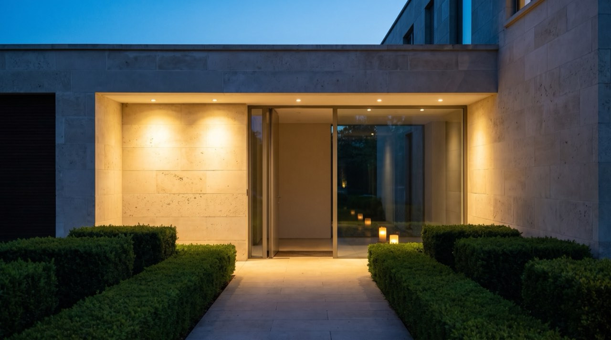
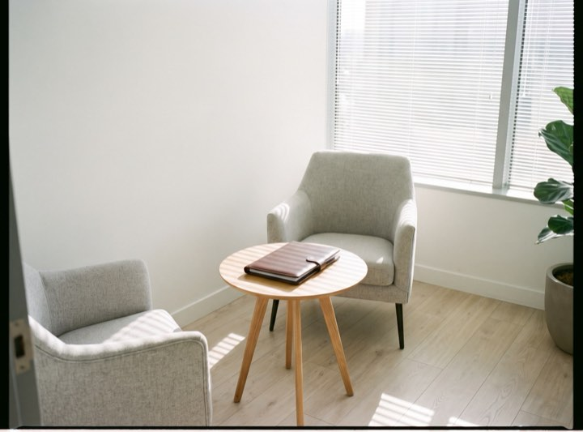
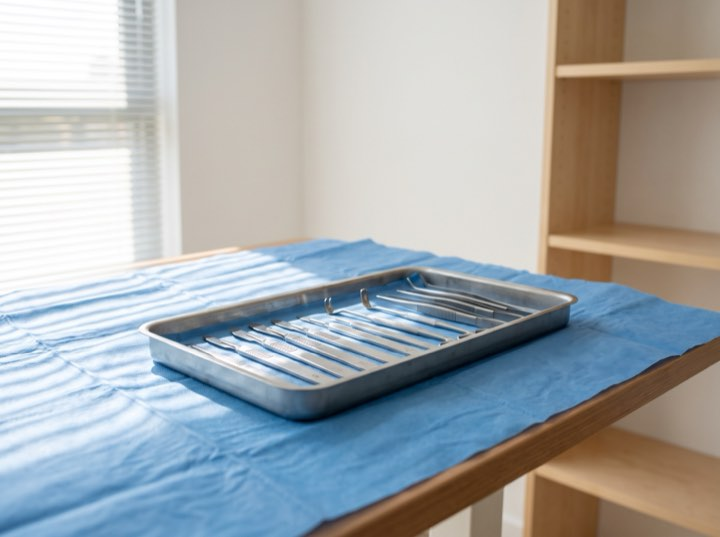
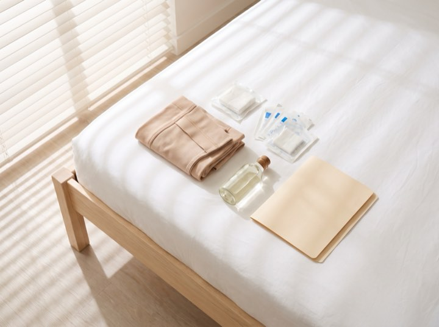

01
Breast surgery
Augmentation, lift, reduction and reconstruction. Sizing done with imaging so you see the projected outcome before deciding.
Board certified · ABPS
Aesthetic and reconstructive surgery in a private, accredited facility. Nine hundred cases over eighteen years, each photographed before, at six weeks, at six months and at a year, including the ones that took revision.

Services
A short list, deliberately. These are the operations performed often enough to be performed exceptionally.
Augmentation, lift, reduction and reconstruction. Sizing done with imaging so you see the projected outcome before deciding.
Abdominoplasty, liposuction and post-weight-loss contouring, staged sensibly rather than crammed into one operation.
Facelift, blepharoplasty and rhinoplasty. Conservative by philosophy: the aim is that nobody can tell you've had anything done.
Injectables, resurfacing and skin. Often the right starting point, and we'll say so when surgery isn't warranted yet.
Results
"The imaging meant I knew what I was choosing. No guessing."
Amara O. · Breast augmentation"He recommended less than I asked for. That's why I trusted him."
Kirsten V. · Facelift"Aftercare was as thorough as the surgery. Called me himself at day three."
Louise M. · Abdominoplasty"Private, discreet, and never once felt like a sales process."
J. R. · RhinoplastyProcess
Unhurried, private, and with the surgeon throughout. Most people are deciding over months, not days.
Fifty minutes with the surgeon. Examination, imaging where useful, and a frank conversation about what is and isn't achievable.
A written surgical plan and an all-inclusive quote covering facility, anaesthesia and follow-up, with no line items appearing later.
Medical clearance, photographs and a second sit-down to confirm you're certain. You can change your mind at any point.
Accredited suite, board-certified anaesthesia, and a structured follow-up schedule out to one year with photographs at each stage.
Every stage
Imaging before, the suite during, recovery after. The gallery is built from the same record.



Most of our patients thought about it for a year or more. A consultation commits you to nothing and is the fastest way to replace guesswork with facts.
Private consultations. Tell us what you are considering and we will pull the cases closest to it. All enquiries handled confidentially.